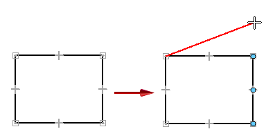
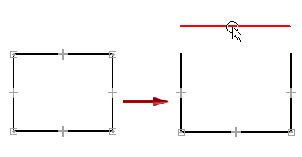
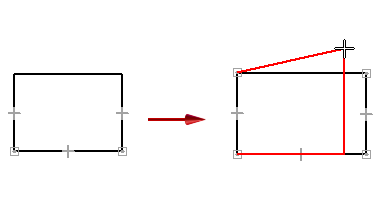

Suspend or remove geometric relationships
You can use Alt+drag to suspend or remove geometric relationships recognized by IntelliSketch, so that you move an element freely.
Suspend IntelliSketch relationships temporarily
-
Begin dragging a keypoint or an element, and then press and hold the Alt key. You may have to release and then reselect the end point.
IntelliSketch does not locate or create any relationships while you hold this key.
-
Release the Alt key to re-activate IntelliSketch.
Example:You can detach and move one endpoint of a line in a rectangle, yet the other end remains connected.

Remove a relationship using Alt+drag
-
Hold the Alt key, and then begin dragging an element or a keypoint.
Example:You can detach and move a line in a rectangle.

Remove a relationship by deleting it
-
Use QuickPick to select a geometric relationship on an element, and then press Delete.
-
Drag the end point of the line to change the shape of the rectangle.
Example:Delete the Horizontal relationship on the line at the top of the rectangle, and then drag the endpoint of the line to change the shape.

How do I
Draw with IntelliSketchExample: Draw a line
Example: Draw a horizontal line
Example: Draw a line connected to another line
Example: Draw an arc
Example: Establish More Than One Relationship
Example: Case Where a Relationship Is Not Maintained
Look up more details
IntelliSketch commandAlignment Indicator command
Locate Background command